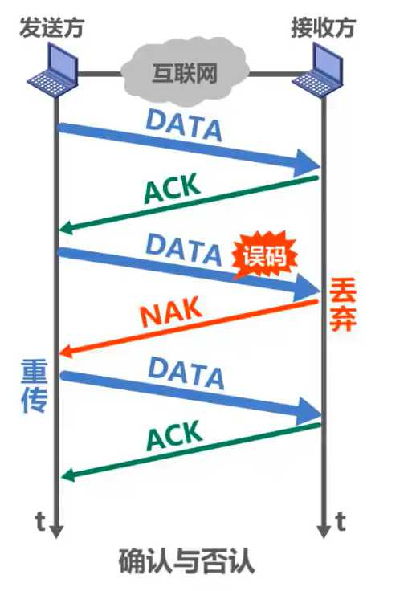
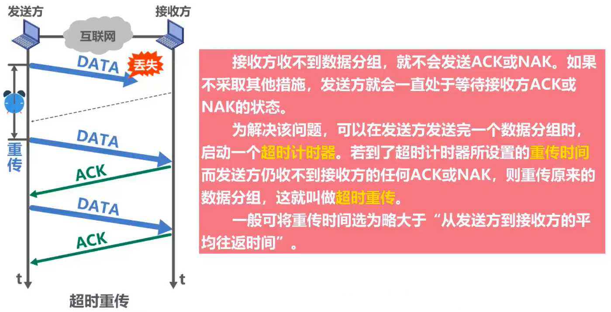
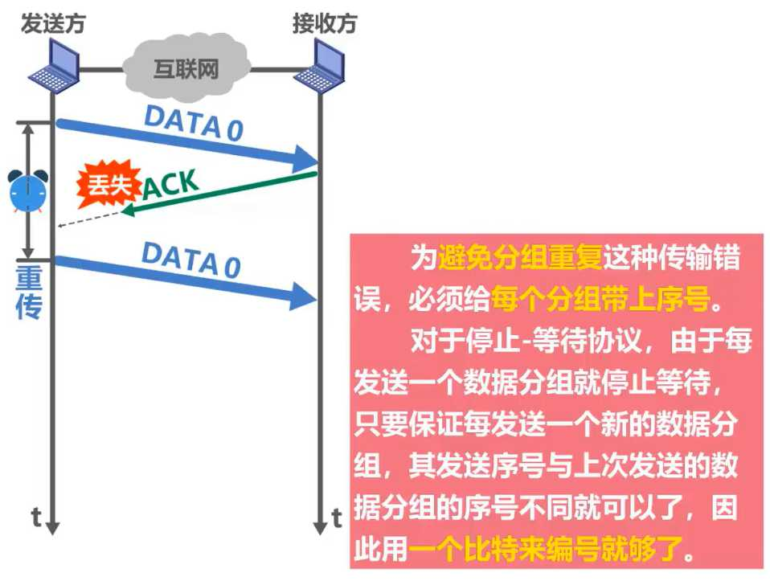
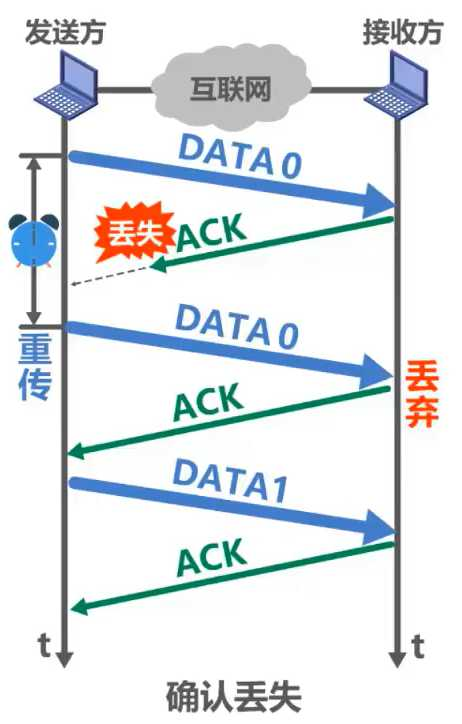
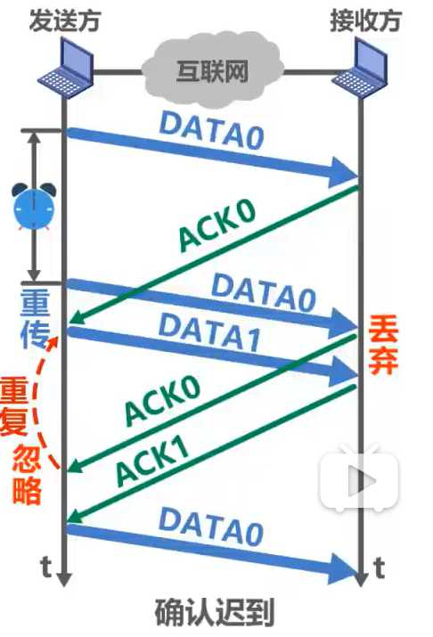

计算机网络第3章（数据链路层）
3.1、数据链路层概述
概述
链路是从一个结点到相邻结点的一段物理线路，数据链路则是在链路的基础上增加了一些必要的硬件（如网络适配器）和软件（如协议的实现）
网络中的主机、路由器等都必须实现数据链路层

局域网中的主机、交换机等都必须实现数据链路层

从层次上来看数据的流动

仅从数据链路层观察帧的流动


主机H1 到主机H2 所经过的网络可以是多种不同类型的
注意：不同的链路层可能采用不同的数据链路层协议
数据链路层使用的信道
数据链路层属于计算机网路的低层。数据链路层使用的信道主要有以下两种类型：
- 点对点信道
- 广播信道

局域网属于数据链路层
局域网虽然是个网络。但我们并不把局域网放在网络层中讨论。这是因为在网络层要讨论的是多个网络互连的问题，是讨论分组怎么从一个网络，通过路由器，转发到另一个网络。
而在同一个局域网中，分组怎么从一台主机传送到另一台主机，但并不经过路由器转发。从整个互联网来看，局域网仍属于数据链路层的范围
三个重要问题
数据链路层传送的协议数据单元是帧
封装成帧
- 封装成帧 (framing) 就是在一段数据的前后分别添加首部和尾部，然后就构成了一个帧。
- 首部和尾部的一个重要作用就是进行帧定界。

差错控制
在传输过程中可能会产生比特差错：1 可能会变成 0， 而 0 也可能变成 1。

可靠传输
接收方主机收到有误码的帧后，是不会接受该帧的，会将它丢弃
如果数据链路层向其上层提供的是不可靠服务，那么丢弃就丢弃了，不会再有更多措施
如果数据链路层向其上层提供的是可靠服务，那就还需要其他措施，来确保接收方主机还可以重新收到被丢弃的这个帧的正确副本

以上三个问题都是使用点对点信道的数据链路层来举例的
如果使用广播信道的数据链路层除了包含上面三个问题外，还有一些问题要解决
如图所示，主机A，B，C，D，E通过一根总线进行互连，主机A要给主机C发送数据，代表帧的信号会通过总线传输到总线上的其他各主机，那么主机B，D，E如何知道所收到的帧不是发送给她们的，主机C如何知道发送的帧是发送给自己的

可以用编址（地址）的来解决
将帧的目的地址添加在帧中一起传输

还有数据碰撞问题

随着技术的发展，交换技术的成熟，
在 有线（局域网）领域 使用点对点链路和链路层交换机的交换式局域网取代了
共享式局域网在无线局域网中仍然使用的是共享信道技术
3.2、封装成帧
介绍
封装成帧是指数据链路层给上层交付的协议数据单元添加帧头和帧尾使之成为帧
- 帧头和帧尾中包含有重要的控制信息

发送方的数据链路层将上层交付下来的协议数据单元封装成帧后，还要通过物理层，将构成帧的各比特，转换成电信号交给传输媒体，那么接收方的数据链路层如何从物理层交付的比特流中提取出一个个的帧？
答：需要帧头和帧尾来做帧定界

但比不是每一种数据链路层协议的帧都包含有帧定界标志，例如下面例子

前导码
- 前同步码：作用是使接收方的时钟同步
- 帧开始定界符：表明其后面紧跟着的就是MAC帧
另外以太网还规定了帧间间隔为96比特时间，因此，MAC帧不需要帧结束定界符

透明传输
透明
指某一个实际存在的事物看起来却好像不存在一样。
透明传输是指数据链路层对上层交付的传输数据没有任何限制，好像数据链路层不存在一样
帧界定标志也就是个特定数据值，如果在上层交付的协议数据单元中， 恰好也包含这个特定数值，接收方就不能正确接收

所以数据链路层应该对上层交付的数据有限制，其内容不能包含帧定界符的值
解决透明传输问题

- 解决方法：面向字节的物理链路使用字节填充 (byte stuffing) 或字符填充 (character stuffing)，面向比特的物理链路使用比特填充的方法实现透明传输
- 发送端的数据链路层在数据中出现控制字符“SOH”或“EOT”的前面插入一个转义字符“ESC”(其十六进制编码是1B)。
- 接收端的数据链路层在将数据送往网络层之前删除插入的转义字符。
- 如果转义字符也出现在数据当中，那么应在转义字符前面插入一个转义字符 ESC。当接收端收到连续的两个转义字符时，就删除其中前面的一个。
帧的数据部分长度

总结

3.3、差错检测
介绍

奇偶校验

循环冗余校验CRC(Cyclic Redundancy Check)


例题


总结

循环冗余校验 CRC 是一种检错方法，而帧校验序列 FCS 是添加在数据后面的冗余码
3.4、可靠传输
基本概念
下面是比特差错

其他传输差错

- 分组丢失
路由器输入队列快满了，主动丢弃收到的分组

- 分组失序
数据并未按照发送顺序依次到达接收端

- 分组重复
由于某些原因，有些分组在网络中滞留了，没有及时到达接收端，这可能会造成发送端对该分组的重发，重发的分组到达接收端，但一段时间后，滞留在网络的分组也到达了接收端，这就造成分组重复的传输差错

三种可靠协议
- 停止-等待协议SW
- 回退N帧协议GBN
- 选择重传协议SR
这三种可靠传输实现机制的基本原理并不仅限于数据链路层，可以应用到计算机网络体系结构的各层协议中
停止-等待协议
停止-等待协议可能遇到的四个问题
确认与否认
超时重传
确认丢失
 既然数据分组需要编号，确认分组是否需要编号？
要。如下图所示
确认迟到
注意，图中最下面那个数据分组与之前序号为0的那个数据分组不是同一个数据分组
注意事项

停止-等待协议的信道利用率
假设收发双方之间是一条直通的信道
- TD：是发送方发送数据分组所耗费的发送时延
- RTT：是收发双方之间的往返时间
- TA：是接收方发送确认分组所耗费的发送时延
TA一般都远小于TD，可以忽略，当RTT远大于TD时，信道利用率会非常低


像停止-等待协议这样通过确认和重传机制实现的可靠传输协议，常称为自动请求重传协议ARQ(Automatic Repeat reQuest)，意思是重传的请求是自动进行，因为不需要接收方显式地请求，发送方重传某个发送的分组
回退N帧协议GBN
为什么用回退N帧协议
在相同的时间内，使用停止-等待协议的发送方只能发送一个数据分组，而采用流水线传输的发送方，可以发送多个数据分组

回退N帧协议在流水线传输的基础上，利用发送窗口来限制发送方可连续发送数据分组的个数

无差错情况流程
发送方将序号落在发送窗口内的0~4号数据分组，依次连续发送出去

他们经过互联网传输正确到达接收方，就是没有乱序和误码，接收方按序接收它们，每接收一个，接收窗口就向前滑动一个位置，并给发送方发送针对所接收分组的确认分组，在通过互联网的传输正确到达了发送方

发送方每接收一个、发送窗口就向前滑动一个位置，这样就有新的序号落入发送窗口，发送方可以将收到确认的数据分组从缓存中删除了，而接收方可以择机将已接收的数据分组交付上层处理

累计确认

累计确认
优点:
- 即使确认分组丢失，发送方也可能不必重传
- 减小接收方的开销
- 减小对网络资源的占用
缺点：
- 不能向发送方及时反映出接收方已经正确接收的数据分组信息
有差错情况
例如
在传输数据分组时，5号数据分组出现误码，接收方通过数据分组中的检错码发现了错误

于是丢弃该分组，而后续到达的这剩下四个分组与接收窗口的序号不匹配

接收同样也不能接收它们，讲它们丢弃，并对之前按序接收的最后一个数据分组进行确认，发送ACK4，每丢弃一个数据分组，就发送一个ACK4

当收到重复的ACK4时，就知道之前所发送的数据分组出现了差错，于是可以不等超时计时器超时就立刻开始重传，具体收到几个重复确认就立刻重传，根据具体实现决定

如果收到这4个重复的确认并不会触发发送立刻重传，一段时间后。超时计时器超时，也会将发送窗口内以发送过的这些数据分组全部重传

若WT超过取值范围，例如WT=8，会出现什么情况？

习题

总结

- 回退N帧协议在流水线传输的基础上利用发送窗口来限制发送方连续发送数据分组的数量，是一种连续ARQ协议
- 在协议的工作过程中发送窗口和接收窗口不断向前滑动，因此这类协议又称为滑动窗口协议
- 由于回退N帧协议的特性，当通信线路质量不好时，其信道利用率并不比停止-等待协议高
选择重传协议SR

习题

总结


3.5、点对点协议PPP
- 点对点协议PPP（Point-to-Point Protocol）是目前使用最广泛的点对点数据链路层协议
- PPP协议是因特网工程任务组IEIF在1992年制定的。经过1993年和1994年的修订，现在的PPP协议已成为因特网的正式标准[RFC1661，RFC1662]
- 数据链路层使用的一种协议，它的特点是：简单；只检测差错，而不是纠正差错；不使用序号，也不进行流量控制；可同时支持多种网络层协议

- PPPoE 是为宽带上网的主机使用的链路层协议

帧格式
必须规定特殊的字符作为帧定界符

透明传输
必须保证数据传输的透明性
实现透明传输的方法
- 面向字节的异步链路：字节填充法（插入“转义字符”）

- 面向比特的同步链路：比特填充法（插入“比特0”）

差错检测
能够对接收端收到的帧进行检测，并立即丢弃有差错的帧。

工作状态
- 当用户拨号接入 ISP 时，路由器的调制解调器对拨号做出确认，并建立一条物理连接。
- PC 机向路由器发送一系列的 LCP 分组（封装成多个 PPP 帧）。
- 这些分组及其响应选择一些 PPP 参数，并进行网络层配置，NCP 给新接入的 PC 机
- 分配一个临时的 IP 地址，使 PC 机成为因特网上的一个主机。
- 通信完毕时，NCP 释放网络层连接，收回原来分配出去的 IP 地址。接着，LCP 释放数据链路层连接。最后释放的是物理层的连接。

可见，PPP 协议已不是纯粹的数据链路层的协议，它还包含了物理层和网络层的内容。
3.6、媒体接入控制（介质访问控制）——广播信道
媒体接入控制（介质访问控制）使用一对多的广播通信方式
Medium Access Control翻译成媒体接入控制，有些翻译成介质访问控制
局域网的数据链路层
- 局域网最主要的特点是：
- 网络为一个单位所拥有；
- 地理范围和站点数目均有限。
- 局域网具有如下主要优点：
- 具有广播功能，从一个站点可很方便地访问全网。局域网上的主机可共享连接在局域网上的各种硬件和软件资源。
- 便于系统的扩展和逐渐地演变，各设备的位置可灵活调整和改变。
- 提高了系统的可靠性、可用性和残存性。


数据链路层的两个子层
为了使数据链路层能更好地适应多种局域网标准，IEEE 802 委员会就将局域网的数据链路层拆成两个子层：
- 逻辑链路控制 LLC (Logical Link Control)子层；
- 媒体接入控制 MAC (Medium Access Control)子层。
与接入到传输媒体有关的内容都放在 MAC子层，而 LLC 子层则与传输媒体无关。 不管采用何种协议的局域网，对 LLC 子层来说都是透明的。

基本概念
为什么要媒体接入控制（介质访问控制）？
共享信道带来的问题
若多个设备在共享信道上同时发送数据，则会造成彼此干扰，导致发送失败。


随着技术的发展，交换技术的成熟和成本的降低，具有更高性能的使用点对点链路和链路层交换机的交换式局域网在有线领域已完全取代了共享式局域网，但由于无线信道的广播天性，无线局域网仍然使用的是共享媒体技术
静态划分信道
信道复用

频分复用FDM (Frequency Division Multiplexing)
-
将整个带宽分为多份，用户在分配到一定的频带后，在通信过程中自始至终都占用这个频带。
-
频分复用的所有用户在同样的时间占用不同的带宽资源（请注意，这里的“带宽”是频率带宽而不是数据的发送速率）。

时分复用TDM (Time Division Multiplexing)
- 时分复用则是将时间划分为一段段等长的时分复用帧（TDM帧）。每一个时分复用的用户在每一个 TDM 帧中占用固定序号的时隙。
- 每一个用户所占用的时隙是周期性地出现（其周期就是TDM帧的长度）的。
- TDM 信号也称为等时 (isochronous) 信号。
- 时分复用的所有用户在不同的时间占用同样的频带宽度。

波分复用 WDM(Wavelength Division Multiplexing)

波分复用就是光的频分复用，使用一根光纤来同时传输多个光载波信号
光信号传输一段距离后悔衰减，所以要用 掺铒光纤放大器 放大光信号
码分复用 CDM (Code Division Multiplexing)


动态接入控制
受控接入
受控接入在局域网中使用得较少，本书不再讨论
随机接入
重点
随机接入（CSMA/CD协议）
总线局域网使用协议：CSMA/CD
基本概念
最初的以太网是将许多计算机都连接到一根总线上。易于实现广播通信。当初认为这样的连接方法既简单又可靠，因为总线上没有有源器件。
以太网（Ethernet）是一种计算机局域网技术。IEEE组织的IEEE 802.3标准制定了**以太网（Ethernet）**的技术标准
以太网采用无连接的工作方式，对发送的数据帧不进行编号，也不要求对方发回确认。目的站收到有差错帧就把它丢弃，其他什么也不做


多址接入MA
表示许多主机以多点接入的方式连接在一根总线上。

载波监听CS
是指每一个站在发送数据之前先要检测一下总线上是否有其他计算机在发送数据，如果有，则暂时不要发送数据，以免发生碰撞。

总线上并没有什么“载波”。因此， “载波监听”就是用电子技术检测总线上有没有其他计算机发送的数据信号。
碰撞检测CD
- “碰撞检测”就是计算机边发送数据边检测信道上的信号电压大小。
- 当几个站同时在总线上发送数据时，总线上的信号电压摆动值将会增大（互相叠加）。
- 当一个站检测到的信号电压摆动值超过一定的门限值时，就认为总线上至少有两个站同时在发送数据，表明产生了碰撞。
- 所谓“碰撞”就是发生了冲突。因此“碰撞检测”也称为“冲突检测”。
- 在发生碰撞时，总线上传输的信号产生了严重的失真，无法从中恢复出有用的信息来。
- 每一个正在发送数据的站，一旦发现总线上出现了碰撞，就要立即停止发送，免得继续浪费网络资源，然后等待一段随机时间后再次发送。

为什么要进行碰撞检测？ 因为信号传播时延对载波监听产生了影响
A 需要单程传播时延的 2 倍的时间，才能检测到与 B 的发送产生了冲突

CSMA/CD 协议工作流程

CSMA/CD 协议工作——争用期（碰撞窗口）

CSMA/CD 协议工作——最小帧长

CSMA/CD 协议工作——最大帧长

CSMA/CD 协议工作——截断二进制指数退避算法

CSMA/CD 协议工作——信道利用率

CSMA/CD 协议工作——帧接收流程

CSMA/CD 协议的重要特性
- 使用 CSMA/CD 协议的以太网不能进行全双工通信而只能进行双向交替通信（半双工通信）。
- 每个站在发送数据之后的一小段时间内，存在着遭遇碰撞的可能性。
- 这种发送的不确定性使整个以太网的平均通信量远小于以太网的最高数据率。
CSMA/CD协议曾经用于各种总线结构以太网和双绞线以太网的早起版本中。
现在的以太网基于交换机和全双工连接，不会有碰撞，因此没有必要使用CSMA/CS协议
随机接入（CSMA/CA协议）
无线局域网使用的协议：CSMA/CA
为什么无线局域网要使用CSMA/CA协议

帧间间隔IFS（InterFrame Space）

CSMA/CA协议的工作原理

源站为什么在检测到信道空闲后还要再等待一段时间DIFS？
- 考虑到可能有其他的站有高优先级的帧要发送。若有，就要让高优先级帧先发送
目的站为什么正确接收数据帧后还要等待一段时间SIFS才能发送ACK帧？
- SIFS是最短的帧间间隔，用来分隔开属于一次对话的各帧，在这段时间内，一个站点应当能够从发送方式切换到接收方式

信道由忙转为空闲且经过DIFS时间后，还要退避一段随机时间才能使用信道？
防止多个站点同时发送数据而产生碰撞
使用退避算法的时机

CSMA/CA协议的退避算法

退避算法的示例

CSMA/CA协议的信道预约和虚拟载波监听


虚拟载波监听机制能减少隐蔽站带来的碰撞问题的示例

3.7、MAC地址、IP地址以及ARP协议

MAC地址
- 使用点对点信道的数据链路层不需要使用地址
- 使用广播信道的数据链路层必须使用地址来区分各主机

广播信道的数据链路层必须使用地址（MAC）

MAC地址又称为硬件地址或物理地址。请注意：不要被 “物理” 二字误导认为物理地址属于物理层范畴，物理地址属于数据链路层范畴
IEEE 802局域网的MAC地址格式

组织唯一标识符OUI
- 生产网络设备的厂商，需要向IEEE的注册管理机构申请一个或多个OUI
网络接口标识符
- 由获得OUI的厂商自行随意分配
EUI-48
- 48是这个MAC地址的位数

对于使用EUI-48空间的应用程序，IEEE的目标寿命为100年（直到2080年），但是鼓励采用EUI-64作为替代
关于无效的 MAC 帧
- 数据字段的长度与长度字段的值不一致；
- 帧的长度不是整数个字节；
- 用收到的帧检验序列 FCS 查出有差错；
- 数据字段的长度不在 46 ~ 1500 字节之间。
- 有效的 MAC 帧长度为 64 ~ 1518 字节之间。
对于检查出的无效 MAC 帧就简单地丢弃。以太网不负责重传丢弃的帧。
IEEE 802局域网的MAC地址发送顺序

单播MAC地址举例

主机B给主机C发送单播帧，主机B首先要构建该单播帧，在帧首部中的目的地址字段填入主机C的MAC地址，源地址字段填入自己的MAC地址，再加上帧首部的其他字段、数据载荷以及帧尾部，就构成了该单播帧

主机B将该单播帧发送出去，主机A和C都会收到该单播帧
主机A的网卡发现该单播帧的目的MAC地址与自己的MAC地址不匹配，丢弃该帧
主机C的网卡发现该单播帧的目的MAC地址与自己的MAC地址匹配，接受该帧
并将该帧交给其上层处理
广播MAC地址举例

假设主机B要发送一个广播帧，主机B首先要构建该广播帧，在帧首部中的目的地址字段填入广播地址，也就是十六进制的全F，源地址字段填入自己的MAC地址，再加上帧首部中的其他字段、数据载荷以及帧尾部，就构成了该广播帧

主机B讲该广播帧发送出去，主机A和C都会收到该广播帧，发现该帧首部中的目的地址字段的内容是广播地址，就知道该帧是广播帧，主机A和主机C都接受该帧，并将该帧交给上层处理
多播MAC地址举例

假设主机A要发送多播帧给该多播地址。将该多播地址的左起第一个字节写成8个比特，第一个字节的最低比特位是1，这就表明该地址是多播地址。
快速判断地址是不是多播地址，就是上图所示箭头所指的第十六进制数不能整除2（1,3,5,7,9,B,D,F），则该地址是多播地址
假设主机B，C和D支持多播，各用户给自己的主机配置多播组列表如下所示

主机B属于两个多播组，主机C也属于两个多播组，而主机D不属于任何多播组

主机A首先要构建该多播帧，在帧首部中的目的地址字段填入该多播地址，源地址点填入自己的MAC地址，再加上帧首部中的其他字段、数据载荷以及帧尾部，就构成了该多播帧

主机A将该多播帧发送出去，主机B、C、D都会收到该多播帧
主机B和C发现该多播帧的目的MAC地址在自己的多播组列表中，主机B和C都会接受该帧
主机D发现该多播帧的目的MAC地址不在自己得多播组列表中，则丢弃该多播帧
给主机配置多播组列表进行私有应用时，不得使用公有的标准多播地址
IP地址
IP地址属于网络层的范畴，不属于数据链路层的范畴
下面内容讲的是IP地址的使用，详细的IP地址内容在网络层中介绍
基本概念

从网络体系结构看IP地址与MAC地址

数据包转发过程中IP地址与MAC地址的变化情况
图上各主机和路由器各接口的IP地址和MAC地址用简单的标识符来表示


如何从IP地址找出其对应的MAC地址？
ARP协议
ARP协议
如何从IP地址找出其对应的MAC地址？
ARP（地址解析协议）
流程

ARP高速缓存表

当主机B要给主机C发送数据包时，会首先在自己的ARP高速缓存表中查找主机C的IP地址所对应的MAC地址，但未找到，因此，主机B需要发送ARP请求报文，来获取主机C的MAC地址

ARP请求报文有具体的格式，上图的只是简单描述
ARP请求报文被封装在MAC帧中发送，目的地址为广播地址
主机B发送封装有ARP请求报文的广播帧，总线上的其他主机都能收到该广播帧

收到ARP请求报文的主机A和主机C会把ARP请求报文交给上层的ARP进程
主机A发现所询问的IP地址不是自己的IP地址，因此不用理会
主机C的发现所询问的IP地址是自己的IP地址，需要进行相应


动态与静态的区别

ARP协议只能在一段链路或一个网络上使用，而不能跨网络使用

ARP协议的使用是逐段链路进行的
总结

ARP表中的IP地址与MAC地址的对应关系记录，是会定期自动删除的，因为IP地址与MAC地址的对应关系不是永久性的
3.8、集线器与交换机的区别
集线器-在物理层扩展以太网
概念

- 传统以太网最初是使用粗同轴电缆，后来演进到使用比较便宜的细同轴电缆，最后发展为使用更便宜和更灵活的双绞线。
- 采用双绞线的以太网采用星形拓扑，在星形的中心则增加了一种可靠性非常高的设备，叫做集线器 (hub)。
- 集线器是也可以看做多口中继器，每个端口都可以成为一个中继器，中继器是对减弱的信号进行放大和发送的设备
- 集线器的以太网在逻辑上仍是个总线网，需要使用CSMA/CD协议来协调各主机争用总线，只能工作在半双工模式，收发帧不能同时进行
集线器HUB在物理层扩展以太网
使用集线器扩展：将多个以太网段连成更大的、多级星形结构的以太网

- 优点
- 使原来属于不同碰撞域的以太网上的计算机能够进行跨碰撞域的通信。
- 扩大了以太网覆盖的地理范围。
- 缺点
- 碰撞域增大了，但总的吞吐量并未提高。
- 如果不同的碰撞域使用不同的数据率，那么就不能用集线器将它们互连起来。
碰撞域
- 碰撞域（collision domain）又称为冲突域，是指网络中一个站点发出的帧会与其他站点发出的帧产生碰撞或冲突的那部分网络。
- 碰撞域越大，发生碰撞的概率越高。
以太网交换机-在数据链路层扩展以太网
概念
- 扩展以太网更常用的方法是在数据链路层进行。
- 早期使用网桥，现在使用以太网交换机。

网桥
- 网桥工作在数据链路层。
- 它根据 MAC 帧的目的地址对收到的帧进行转发和过滤。
- 当网桥收到一个帧时，并不是向所有的接口转发此帧，而是先检查此帧的目的MAC 地址，然后再确定将该帧转发到哪一个接口，或把它丢弃。
交换机
- 1990 年问世的交换式集线器 (switching hub) 可明显地提高以太网的性能。
- 交换式集线器常称为以太网交换机 (switch) 或第二层交换机 (L2 switch)，强调这种交换机工作在数据链路层。
- 以太网交换机实质上就是一个多接口的网桥
集线器HUB与交换机SWITCH区别

使用集线器互连而成的共享总线式以太网上的某个主机，要给另一个主机发送单播帧，该单播帧会通过共享总线传输到总线上的其他各个主机
使用交换机互连而成的交换式以太网上的某个主机，要给另一个主机发送单播帧，该单播帧进入交换机后，交换机会将该单播帧转发给目的主机，而不是网络中的其他各个主机
这个例子的前提条件是忽略ARP过程，并假设交换机的帧交换表已经学习或配置好了

以太网交换机的交换方式
- 存储转发方式
- 把整个数据帧先缓存后再进行处理。
- 直通 (cut-through) 方式
- 接收数据帧的同时就立即按数据帧的目的 MAC 地址决定该帧的转发接口，因而提高了帧的转发速度。
- 缺点是它不检查差错就直接将帧转发出去，因此有可能也将一些无效帧转发给其他的站。
这个例子的前提条件是忽略ARP过程，并假设交换机的帧交换表已经学习或配置好了
对比集线器和交换机


多台主机同时给另一台主机发送单播帧
集线器以太网：会产生碰撞，遭遇碰撞的帧会传播到总线上的各主机
交换机以太网：会将它们缓存起来，然后逐个转发给目的主机，不会产生碰撞
这个例子的前提条件是忽略ARP过程，并假设交换机的帧交换表已经学习或配置好了
集线器扩展以太网和交换机扩展以太网区别
单播

广播

多个单播


广播域（broadcast domain）：指这样一部分网络，其中任何一台设备发出的广播通信都能被该部分网络中的所有其他设备所接收。
总结


工作在数据链路层的以太网交换机，其性能远远超过工作在物理层的集线器，而且价格并不贵，这就使得集线器逐渐被市场淘汰
3.9、以太网交换机自学习和转发帧的流程
概念

自学习和转发帧的例子
以下例子假设各主机知道网络中其他各主机的MAC地址（无需进行ARP）
A -> B

- A 先向 B 发送一帧。该帧从接口 1 进入到交换机
- 交换机收到帧后，先查找（图中左边）交换表。没有查到应从哪个接口转发这个帧给 B
- 交换机把这个帧的源地址 A 和接口 1 写入（图中左边）交换表中
- 交换机向除接口 1 以外的所有的接口广播这个帧
- 接口 4到接口 2，先查找（图中右边）交换表。没有查到应从哪个接口转发这个帧给 B
- 交换机把这个帧的源地址 A 和接口 1 写入（图中右边）交换表中
- 除B主机之外与该帧的目的地址不相符，将丢弃该帧
- 主机B发现是给自己的帧，接受该帧
B -> A

- B 向 A 发送一帧。该帧从接口 3 进入到交换机
- 交换机收到帧后，先查找（图中左边）交换表。发现（图中左边）交换表中的 MAC 地址有 A，表明要发送给A的帧应从接口1转发出去。于是就把这个帧传送到接口 1 转发给 A。
- 主机 A 发现目的地址是它，就接受该帧
- 交换机把这个帧的源地址 B 和接口 3 写入（图中左边）交换表中
E -> A

- E 向 A发送一帧
- 交换机收到帧后，先查找（图中右边）交换表。发现（图中右边）交换表中的 MAC 地址有 A，表明要发送给A的帧应从接口2转发出去。于是就把这个帧传送到接口 2 转发给 接口 4。
- 交换机把这个帧的源地址 E 和接口 3 写入（图中右边）交换表中
- 接口 4 到 左边的交换机，先查找（图中左边）交换表。发现（图中左边）交换表中的 MAC 地址有 A，表明要发送给A的帧应从接口1转发出去。于是就把这个帧传送到接口 1 转发给 A。
- 交换机把这个帧的源地址 E 和接口 4 写入（图中左边）交换表中
- 主机 A 发现目的地址是它，就接受该帧
G -> A

主机 A、主机 G、交换机 1的接口 1就共享同一条总线（相当于总线式网络，可以想象成用集线器连接了）
- 主机 G 发送给 主机 A 一个帧
- 主机 A 和 交换机接口 1都能接收到
- 主机 A 的网卡收到后，根据帧的目的MAC地址A，就知道是发送给自己的帧，就接受该帧
- 交换机 1收到该帧后，首先进行登记工作
- 然后交换机 1对该帧进行转发，该帧的MAC地址是A，在（图中左边）交换表查找MAC 地址有 A
- MAC 地址为 A的接口号是1，但是该帧正是从接口 1 进入交换机的，交换机不会再从该接口 1 将帧转发出去，因为这是没有必要，于是丢弃该帧
随着网络中各主机都发送了帧后，网络中的各交换机就可以学习到各主机的MAC地址，以及它们与自己各接口的对应关系

考虑到可能有时要在交换机的接口更换主机，或者主机要更换其网络适配器，这就需要更改交换表中的项目。为此，在交换表中每个项目都设有一定的有效时间。过期的项目就自动被删除。
以太网交换机的这种自学习方法使得以太网交换机能够即插即用，不必人工进行配置，因此非常方便。
总结
交换机自学习和转发帧的步骤归纳


3.10、以太网交换机的生成树协议STP
如何提高以太网的可靠性


生成树协议STP

- IEEE 802.1D 标准制定了一个生成树协议 STP (Spanning Tree Protocol)。
- 其要点是：不改变网络的实际拓扑，但在逻辑上则切断某些链路，使得从一台主机到所有其他主机的路径是无环路的树状结构，从而消除了兜圈子现象。

3.11、虚拟局域网VLAN
为什么要虚拟局域网VLAN
广播风暴

分割广播域的方法

为了分割广播域，所以虚拟局域网VLAN技术应运而生
概念

- 利用以太网交换机可以很方便地实现虚拟局域网 VLAN (Virtual LAN)。
- IEEE 802.1Q 对虚拟局域网 VLAN 的定义： 虚拟局域网 VLAN 是由一些局域网网段构成的与物理位置无关的逻辑组，而这些网段具有某些共同的需求。每一个 VLAN 的帧都有一个明确的标识符，指明发送这个帧的计算机是属于哪一个 VLAN。
- 同一个VLAN内部可以广播通信，不同VLAN不可以广播通信
- 虚拟局域网其实只是局域网给用户提供的一种服务，而并不是一种新型局域网。
- 由于虚拟局域网是用户和网络资源的逻辑组合，因此可按照需要将有关设备和资源非常方便地重新组合，使用户从不同的服务器或数据库中存取所需的资源。
虚拟局域网VLAN的实现机制
虚拟局域网VLAN技术是在交换机上实现的，需要交换机能够实现以下功能
- 能够处理带有VLAN标记的帧——IEEE 802.1 Q帧
- 交换机的各端口可以支持不同的端口类型，不同端口类型的端口对帧的处理方式有所不同


Access端口
交换机与用户计算机之间的互连

同一个VLAN内部可以广播通信，不同VLAN不可以广播通信
Truck端口
交换机之间或交换机与路由器之间的互连

小例题

华为交换机私有的Hybrid端口类型


总结

虚拟局域网优点
虚拟局域网（VLAN）技术具有以下主要优点：
- 改善了性能
- 简化了管理
- 降低了成本
- 改善了安全性